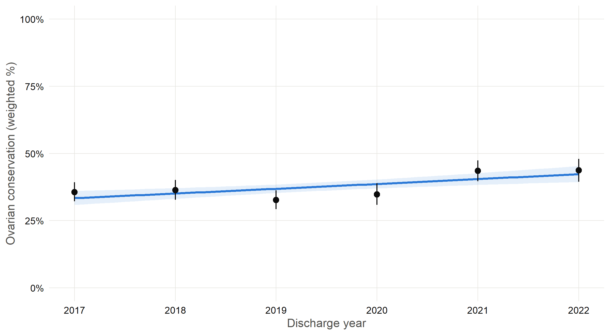
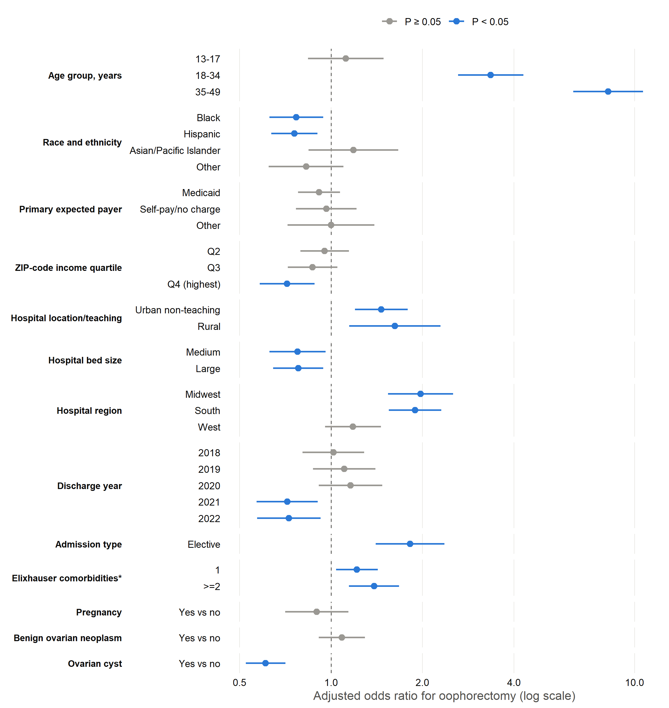

| Construct | ICD-10 codes |
|---|---|
| Population | |
| Ovarian torsion | N83.511, N83.512, N83.519, N83.53 |
| Exclusions | |
| Gynaecological malignancy | C51, C52, C53, C54, C55, C56, C57, C58, C79.6 |
| Borderline ovarian tumour | D39.1 |
| Hysterectomy | 0UT9*, 0UTC* |
| Ectopic pregnancy | O00 |
| Delivery admission (diagnosis) | O80, O82, Z37 |
| Delivery admission (procedure) | 10D0*, 10E0* |
| Procedures | |
| Oophorectomy / salpingo-oophorectomy | 0UT0*, 0UT1*, 0UT2* |
| Conservation: detorsion | 0UN0*, 0UN1*, 0UN2*, 0US0*, 0US1*, 0US2* |
| Conservation: cystectomy / drainage / destruction | 0UB0*, 0UB1*, 0UB2*, 0U90*, 0U91*, 0U92*, 0U50*, 0U51*, 0U52* |
| Conservation: oophoropexy / repair | 0UQ0*, 0UQ1*, 0UQ2* |
| Conservation: tubal procedure, ovary kept | 0UT5*, 0UT6*, 0UT7*, 0UB5*, 0UB6*, 0UB7*, 0UN5*, 0UN6*, 0UN7*, 0US5*, 0US6*, 0US7* |
| Complications: procedure-related | |
| Procedure-related complication | T81, N99, K91.7, J95.8 |
| Complications: infection | |
| Sepsis | A40, A41, R65.2, T81.44 |
| Pneumonia | J12, J13, J14, J15, J16, J17, J18, J69.0 |
| Complications: bleeding | |
| Blood transfusion | 302* |
| Complications: ileus | |
| Postoperative ileus | K56.0, K56.7, K91.3 |
| Complications: major systemic | |
| Venous thromboembolism | I26, I80.1, I80.2, I80.3, I82.40, I82.41, I82.42, I82.43, I82.44, I82.49, I82.4Y, I82.4Z, I82.22 |
| Myocardial infarction | I21, I22 |
| Stroke | I60, I61, I62, I63 |
| Shock | R57, R65.21, T81.1 |
| Respiratory failure | J96.0, J96.2, J95.82 |
| Acute kidney injury | N17 |
| Covariates | |
| Pregnancy | O00–O9A, Z33.1 |
| Benign ovarian neoplasm | D27 |
| Ovarian cyst | N83.0, N83.1, N83.2 |
| Codes include all subcodes (e.g., D27 = D27.0–D27.9). * = all ICD-10-PCS codes beginning with this stem. Complications use secondary diagnoses (DX2–DX40). | |
Trends and Disparities in Ovarian-Conserving Surgery for Ovarian Torsion in US Females: A National Inpatient Sample Analysis, 2017–2022
Background
- Ovarian torsion is a gynaecological emergency in girls and women of reproductive age.
- The twisted ovary usually recovers after detorsion, even when it looks ischaemic. ACOG therefore recommends conserving the ovary whenever possible.
- In the NIS 2001–2015, about 3 in 4 women younger than 50 still had the ovary removed (Mandelbaum et al., 2020). No national study covers the ICD-10 era or examines disparities.
Reference paper: Mandelbaum RS, et al. Conservative surgery for ovarian torsion in young women: perioperative complications and national trends. BJOG. 2020;127(8):957–965.
Objectives
- Estimate how often the ovary is conserved, and how this changed from 2017 to 2022.
- Identify patient and hospital characteristics associated with oophorectomy.
- Compare complications, length of stay and cost after oophorectomy versus conservation.
Methods
Data and population
- Data: National Inpatient Sample (NIS), 2017–2022 (HCUP, AHRQ), a 20% stratified sample of US community-hospital discharges.
- Included: females aged 1–49 years with ovarian torsion in any diagnosis position (N83.511, N83.512, N83.519, N83.53) who had an ovarian or adnexal procedure.
- Excluded: gynaecological malignancy, borderline ovarian tumour, concurrent hysterectomy, ectopic pregnancy or delivery admission, or no qualifying ovarian or adnexal procedure.
Outcomes
- Primary outcome: oophorectomy (with or without salpingectomy) versus ovarian conservation. Conservation means detorsion, cystectomy or partial excision, drainage, oophoropexy, or a tubal procedure, with no ovarian resection.
- Secondary outcomes:
- laparoscopic versus open approach;
- in-hospital complications, reported individually and grouped into five categories (Table M1):
- procedure-related complication;
- infection (sepsis or pneumonia);
- blood transfusion;
- postoperative ileus;
- major systemic complication (venous thromboembolism, myocardial infarction, stroke, shock, respiratory failure or acute kidney injury);
- non-home discharge;
- length of stay;
- hospital cost, adjusted to 2022 US dollars.
Covariates
- Patient: age group (1–12, 13–17, 18–34, 35–49 years), race and ethnicity, payer, ZIP-code income quartile.
- Hospital: location and teaching status, bed size, region.
- Year.
- Admission: elective versus non-elective (emergency or urgent) admission.
- Clinical: Elixhauser comorbidity count (standard 31 conditions: 0, 1, ≥2), pregnancy, benign ovarian neoplasm, ovarian cyst.
- Missing values: missing race, payer and income were kept as a separate category.
Statistical analysis
- Survey design: all analyses use the NIS survey weights, strata and hospital clusters.
- Trend: weighted annual conservation rates. The trend was tested with survey-weighted logistic regression, using year as a continuous variable.
- Factors associated with oophorectomy: multivariable survey-weighted logistic regression, reported as adjusted odds ratios (aOR) with 95% CIs.
- Secondary outcomes:
- binary outcomes: logistic regression;
- length of stay: quasi-Poisson regression with a log link, so same-day discharges (length of stay 0 days) are included;
- cost: Gamma regression with a log link.
- All secondary models are adjusted for the same covariates.
- Reporting rules:
- P < 0.05 was considered significant.
- Cells based on 1–10 discharges are suppressed (†), as the HCUP Data Use Agreement requires.
Table M1 · ICD-10 codes
Results
Cohort derivation
| Step | Unweighted | Weighted (national) |
|---|---|---|
| Hospitalizations with ovarian torsion (any diagnosis position) | 7,349 | 36,745 |
| Excluded: age <1 or >49 years, or missing | 1,522 | 7,610 |
| Excluded: male or missing sex | 0 | 0 |
| Excluded: gynaecological malignancy | 94 | 470 |
| Excluded: borderline ovarian tumour | 54 | 270 |
| Excluded: concurrent hysterectomy | 255 | 1,275 |
| Excluded: ectopic pregnancy or delivery admission | 185 | 925 |
| Excluded: no qualifying ovarian/adnexal procedure | 538 | 2,690 |
| Analytic cohort | 4,701 | 23,505 |
| Oophorectomy or salpingo-oophorectomy | 2,930 | 14,650 |
| Ovarian conservation | 1,771 | 8,855 |
| Exclusions are applied in order. Weighted counts are 6-year totals. | ||
Table 1 · Characteristics by surgical management
| Characteristic | Ovarian conservation Weighted N = 8,855 Unweighted n = 1,771a |
Oophorectomy Weighted N = 14,650 Unweighted n = 2,930a |
p-valueb |
|---|---|---|---|
| Age, years | 23.6 (10.5) | 32.0 (10.4) | <0.001 |
| Age group, years | <0.001 | ||
| 1-12 | 1,465 (16.5%) | 650 (4.4%) | |
| 13-17 | 1,745 (19.7%) | 845 (5.8%) | |
| 18-34 | 4,055 (45.8%) | 6,675 (45.6%) | |
| 35-49 | 1,590 (18.0%) | 6,480 (44.2%) | |
| Race and ethnicity | <0.001 | ||
| White | 3,195 (36.1%) | 6,730 (45.9%) | |
| Black | 1,425 (16.1%) | 2,515 (17.2%) | |
| Hispanic | 3,025 (34.2%) | 3,565 (24.3%) | |
| Asian/Pacific Islander | 350 (4.0%) | 635 (4.3%) | |
| Other | 605 (6.8%) | 780 (5.3%) | |
| Missing | 255 (2.9%) | 425 (2.9%) | |
| Primary expected payer | <0.001 | ||
| Private | 3,855 (43.5%) | 7,420 (50.6%) | |
| Medicaid | 3,810 (43.0%) | 4,625 (31.6%) | |
| Self-pay/no charge | 820 (9.3%) | 1,795 (12.3%) | |
| Other | Suppressed† | Suppressed† | |
| Missing | Suppressed† | Suppressed† | |
| ZIP-code median household income quartile | <0.001 | ||
| Q1 (lowest) | 2,325 (26.3%) | 4,235 (28.9%) | |
| Q2 | 2,080 (23.5%) | 3,935 (26.9%) | |
| Q3 | 2,210 (25.0%) | 3,520 (24.0%) | |
| Q4 (highest) | 2,135 (24.1%) | 2,790 (19.0%) | |
| Missing | 105 (1.2%) | 170 (1.2%) | |
| Patient residence (NCHS urban–rural) | <0.001 | ||
| Large metropolitan | 6,295 (71.1%) | 8,330 (56.9%) | |
| Medium/small metropolitan | 1,850 (20.9%) | 4,295 (29.3%) | |
| Micropolitan/rural | 655 (7.4%) | Suppressed† | |
| Missing | 55 (0.6%) | Suppressed† | |
| Hospital location and teaching status | <0.001 | ||
| Urban teaching | 7,580 (85.6%) | 10,860 (74.1%) | |
| Urban non-teaching | 995 (11.2%) | 2,745 (18.7%) | |
| Rural | 280 (3.2%) | 1,045 (7.1%) | |
| Hospital bed size | 0.002 | ||
| Small | 1,290 (14.6%) | 2,750 (18.8%) | |
| Medium | 2,440 (27.6%) | 4,065 (27.7%) | |
| Large | 5,125 (57.9%) | 7,835 (53.5%) | |
| Hospital region | <0.001 | ||
| Northeast | 1,980 (22.4%) | 2,100 (14.3%) | |
| Midwest | 1,070 (12.1%) | 2,570 (17.5%) | |
| South | 2,835 (32.0%) | 6,390 (43.6%) | |
| West | 2,970 (33.5%) | 3,590 (24.5%) | |
| Discharge year | <0.001 | ||
| 2017 | 1,495 (16.9%) | 2,700 (18.4%) | |
| 2018 | 1,455 (16.4%) | 2,545 (17.4%) | |
| 2019 | 1,300 (14.7%) | 2,680 (18.3%) | |
| 2020 | 1,310 (14.8%) | 2,460 (16.8%) | |
| 2021 | 1,740 (19.6%) | 2,260 (15.4%) | |
| 2022 | 1,555 (17.6%) | 2,005 (13.7%) | |
| Admission type | <0.001 | ||
| Non-elective | 8,355 (94.4%) | 12,835 (87.6%) | |
| Elective | 500 (5.6%) | 1,815 (12.4%) | |
| Admission day | 0.386 | ||
| Weekday | 6,530 (73.7%) | 10,970 (74.9%) | |
| Weekend | 2,325 (26.3%) | 3,680 (25.1%) | |
| Benign ovarian neoplasm (D27) | 1,840 (20.8%) | 3,760 (25.7%) | <0.001 |
| Ovarian cyst (N83.0–N83.2) | 4,800 (54.2%) | 6,330 (43.2%) | <0.001 |
| Ovarian endometriosis (N80.1) | 215 (2.4%) | 475 (3.2%) | 0.111 |
| Pregnancy | 715 (8.1%) | 1,205 (8.2%) | 0.857 |
| Obesity | 1,540 (17.4%) | 3,240 (22.1%) | <0.001 |
| Elixhauser comorbidities* | <0.001 | ||
| 0 | 5,420 (61.2%) | 7,310 (49.9%) | |
| 1 | 2,165 (24.4%) | 3,965 (27.1%) | |
| >=2 | 1,270 (14.3%) | 3,375 (23.0%) | |
| a Weighted n (weighted column %) or weighted mean (SD). | |||
| b Rao–Scott χ² test (categorical); design-based Wilcoxon test (continuous). | |||
| * Elixhauser comorbidity count (standard 31 conditions). † Suppressed: based on 1–10 unweighted discharges, or suppressed to prevent recalculation of such a cell (HCUP Data Use Agreement). | |||
Objective 1 · Trend in ovarian conservation

| Table 2 · Ovarian conservation by year | ||
| Period | Unweighted n | Conservation, weighted % (95% CI) |
|---|---|---|
| 2017 | 839 | 35.6 (32.2–39.3) |
| 2018 | 800 | 36.4 (32.7–40.2) |
| 2019 | 796 | 32.7 (29.2–36.3) |
| 2020 | 754 | 34.7 (30.8–38.9) |
| 2021 | 800 | 43.5 (39.7–47.4) |
| 2022 | 712 | 43.7 (39.5–47.9) |
| 2017–2022 | 4,701 | 37.7 (36.1–39.2) |
| Trend, unadjusted OR per year | 1.08 (1.04–1.12); P <0.001 | |
| Trend, adjusted OR per year† | 1.08 (1.03–1.12); P <0.001 | |
| OR per year > 1 = conservation becoming more common. | ||
| † Adjusted for age group, race and ethnicity, payer, income quartile, hospital location/teaching status, bed size, region, admission type (elective vs non-elective), Elixhauser category, pregnancy, benign ovarian neoplasm and ovarian cyst. | ||
| Table 3 · Ovarian conservation by age group | |||
| Age group, years | Unweighted n | Conservation, weighted % (95% CI) | Trend, adjusted OR per year (95% CI) |
|---|---|---|---|
| 1-12 | 423 | 69.3 (64.5–73.7) | 1.10 (0.97–1.25) |
| 13-17 | 518 | 67.4 (62.8–71.6) | 1.15 (1.03–1.30) |
| 18-34 | 2,146 | 37.8 (35.7–39.9) | 1.03 (0.98–1.09) |
| 35-49 | 1,614 | 19.7 (17.8–21.8) | 1.13 (1.05–1.23) |
| Age group × year interaction: P = 0.139. Adjusted for age group, race and ethnicity, payer, income quartile, hospital location/teaching status, bed size, region, admission type (elective vs non-elective), Elixhauser category, pregnancy, benign ovarian neoplasm and ovarian cyst. | |||
Objective 2 · Factors associated with oophorectomy
| Table 4 · Characteristics associated with oophorectomy | |||||
| Unweighted n | Oophorectomy, weighted % | Crude OR (95% CI) | Adjusted OR (95% CI) | P | |
|---|---|---|---|---|---|
| Age group, years (overall P <0.001) | |||||
| 1-12 | 423 | 30.7 | 1 (reference) | 1 (reference) | |
| 13-17 | 518 | 32.6 | 1.09 (0.83–1.44) | 1.12 (0.84–1.49) | 0.444 |
| 18-34 | 2,146 | 62.2 | 3.71 (2.94–4.67) | 3.35 (2.62–4.30) | <0.001 |
| 35-49 | 1,614 | 80.3 | 9.19 (7.17–11.76) | 8.17 (6.27–10.65) | <0.001 |
| Race and ethnicity (overall P = 0.009) | |||||
| White | 1,985 | 67.8 | 1 (reference) | 1 (reference) | |
| Black | 788 | 63.8 | 0.84 (0.70–1.00) | 0.77 (0.63–0.94) | 0.011 |
| Hispanic | 1,318 | 54.1 | 0.56 (0.48–0.65) | 0.76 (0.64–0.90) | 0.002 |
| Asian/Pacific Islander | 197 | 64.5 | 0.86 (0.64–1.17) | 1.19 (0.84–1.67) | 0.325 |
| Other | 277 | 56.3 | 0.61 (0.47–0.79) | 0.83 (0.62–1.10) | 0.191 |
| Missing | 136 | 62.5 | 0.79 (0.55–1.14) | 0.92 (0.64–1.32) | 0.653 |
| Primary expected payer (overall P = 0.798) | |||||
| Private | 2,255 | 65.8 | 1 (reference) | 1 (reference) | |
| Medicaid | 1,687 | 54.8 | 0.63 (0.55–0.72) | 0.91 (0.78–1.07) | 0.266 |
| Self-pay/no charge | 523 | 68.6 | 1.14 (0.93–1.39) | 0.97 (0.77–1.21) | 0.762 |
| Other | 228 | 68.4 | 1.13 (0.83–1.52) | 1.00 (0.72–1.39) | 1.000 |
| Missing | Suppressed† | Suppressed† | Suppressed† | Suppressed† | |
| ZIP-code income quartile (overall P = 0.024) | |||||
| Q1 (lowest) | 1,312 | 64.6 | 1 (reference) | 1 (reference) | |
| Q2 | 1,203 | 65.4 | 1.04 (0.88–1.22) | 0.95 (0.79–1.14) | 0.604 |
| Q3 | 1,146 | 61.4 | 0.87 (0.74–1.03) | 0.87 (0.72–1.05) | 0.144 |
| Q4 (highest) | 985 | 56.6 | 0.72 (0.60–0.85) | 0.72 (0.58–0.88) | 0.002 |
| Missing | 55 | 61.8 | 0.89 (0.51–1.56) | 0.80 (0.45–1.44) | 0.459 |
| Hospital location/teaching (overall P <0.001) | |||||
| Urban teaching | 3,688 | 58.9 | 1 (reference) | 1 (reference) | |
| Urban non-teaching | 748 | 73.4 | 1.93 (1.61–2.30) | 1.46 (1.20–1.79) | <0.001 |
| Rural | 265 | 78.9 | 2.60 (1.90–3.56) | 1.62 (1.15–2.29) | 0.006 |
| Hospital bed size (overall P = 0.027) | |||||
| Small | 808 | 68.1 | 1 (reference) | 1 (reference) | |
| Medium | 1,301 | 62.5 | 0.78 (0.64–0.96) | 0.78 (0.63–0.96) | 0.019 |
| Large | 2,592 | 60.5 | 0.72 (0.60–0.86) | 0.78 (0.64–0.94) | 0.011 |
| Hospital region (overall P <0.001) | |||||
| Northeast | 816 | 51.5 | 1 (reference) | 1 (reference) | |
| Midwest | 728 | 70.6 | 2.26 (1.81–2.84) | 1.97 (1.54–2.52) | <0.001 |
| South | 1,845 | 69.3 | 2.13 (1.77–2.55) | 1.89 (1.55–2.31) | <0.001 |
| West | 1,312 | 54.7 | 1.14 (0.93–1.39) | 1.18 (0.96–1.46) | 0.124 |
| Discharge year (overall P <0.001) | |||||
| 2017 | 839 | 64.4 | 1 (reference) | 1 (reference) | |
| 2018 | 800 | 63.6 | 0.97 (0.77–1.21) | 1.02 (0.81–1.28) | 0.882 |
| 2019 | 796 | 67.3 | 1.14 (0.91–1.43) | 1.10 (0.87–1.40) | 0.409 |
| 2020 | 754 | 65.3 | 1.04 (0.82–1.32) | 1.16 (0.91–1.48) | 0.229 |
| 2021 | 800 | 56.5 | 0.72 (0.58–0.90) | 0.72 (0.57–0.90) | 0.005 |
| 2022 | 712 | 56.3 | 0.71 (0.57–0.90) | 0.73 (0.57–0.92) | 0.009 |
| Admission type (overall P <0.001) | |||||
| Non-elective | 4,238 | 60.6 | 1 (reference) | 1 (reference) | |
| Elective | 463 | 78.4 | 2.36 (1.86–3.00) | 1.82 (1.40–2.36) | <0.001 |
| Elixhauser comorbidities* (overall P = 0.001) | |||||
| 0 | 2,546 | 57.4 | 1 (reference) | 1 (reference) | |
| 1 | 1,226 | 64.7 | 1.36 (1.18–1.57) | 1.22 (1.04–1.42) | 0.015 |
| >=2 | 929 | 72.7 | 1.97 (1.67–2.32) | 1.39 (1.14–1.68) | <0.001 |
| Pregnancy (overall P = 0.375) | |||||
| No | 4,317 | 62.3 | 1 (reference) | 1 (reference) | |
| Yes | 384 | 62.8 | 1.02 (0.82–1.27) | 0.90 (0.71–1.14) | 0.375 |
| Benign ovarian neoplasm (overall P = 0.358) | |||||
| No | 3,581 | 60.8 | 1 (reference) | 1 (reference) | |
| Yes | 1,120 | 67.1 | 1.32 (1.14–1.52) | 1.09 (0.91–1.29) | 0.358 |
| Ovarian cyst (overall P <0.001) | |||||
| No | 2,475 | 67.2 | 1 (reference) | 1 (reference) | |
| Yes | 2,226 | 56.9 | 0.64 (0.57–0.72) | 0.61 (0.52–0.71) | <0.001 |
| Survey-weighted multivariable logistic regression including every characteristic shown. OR > 1 = higher odds of losing the ovary. Overall P = adjusted Wald test. | |||||
| * Elixhauser comorbidity count, standard 31 conditions (0, 1, ≥2). † Suppressed: a level with 1–10 unweighted discharges, events or non-events (HCUP Data Use Agreement). | |||||

Objective 3 · Outcomes after oophorectomy versus conservation
| Table 5 · Unadjusted outcomes, including each complication | |||
| Outcome | Ovarian conservation Weighted N = 8,855 Unweighted n = 1,771a |
Oophorectomy Weighted N = 14,650 Unweighted n = 2,930a |
p-valueb |
|---|---|---|---|
| Laparoscopic approach (vs open/converted) | 5,715 (64.5%) | 6,050 (41.3%) | <0.001 |
| Procedure-related complication | 160 (1.8%) | 200 (1.4%) | 0.242 |
| Sepsis | 60 (0.7%) | 105 (0.7%) | 0.878 |
| Pneumonia | Suppressed† | 120 (0.8%) | 0.050 |
| Blood transfusion | 170 (1.9%) | 415 (2.8%) | 0.058 |
| Postoperative ileus | 115 (1.3%) | 355 (2.4%) | 0.007 |
| Venous thromboembolism | 0 (0.0%) | Suppressed† | 0.062 |
| Myocardial infarction | 0 (0.0%) | Suppressed† | 0.437 |
| Stroke | 0 (0.0%) | 0 (0.0%) | |
| Shock | Suppressed† | 65 (0.4%) | 0.759 |
| Respiratory failure | 55 (0.6%) | 70 (0.5%) | 0.530 |
| Acute kidney injury | Suppressed† | 150 (1.0%) | 0.066 |
| Non-home discharge | Suppressed† | 55 (0.4%) | 0.209 |
| Length of stay, days | <0.001 | ||
| Mean (SD) | 1.8 (1.9) | 2.3 (2.0) | |
| Median (Q1, Q3) | 1.0 (1.0, 2.0) | 2.0 (1.0, 3.0) | |
| Hospital cost, 2022 USD | 0.112 | ||
| Mean (SD) | 13,325 (7,813) | 13,572 (7,955) | |
| Median (Q1, Q3) | 11,652 (8,668, 15,971) | 11,825 (9,042, 15,748) | |
| Hospital charges, 2022 USD | 0.440 | ||
| Mean (SD) | 57,613 (35,695) | 59,407 (40,379) | |
| Median (Q1, Q3) | 48,991 (34,187, 72,348) | 49,966 (34,157, 71,940) | |
| a Weighted n (weighted column %), weighted mean (SD) and median (IQR). | |||
| b Rao–Scott χ² test (categorical); design-based Wilcoxon test (continuous). | |||
| Non-home discharge among survivors with a known destination. Costs = charges × hospital cost-to-charge ratio, 2022 USD. † Suppressed: based on 1–10 unweighted discharges, or suppressed to prevent recalculation of such a cell (HCUP Data Use Agreement). | |||
| Table 6 · Oophorectomy versus conservation: adjusted outcomes | |||||
| Events, oophorectomy / conservation | Crude (95% CI) | Adjusted (95% CI) | P | Adjusted difference (95% CI) | |
|---|---|---|---|---|---|
| Approach and discharge | |||||
| Laparoscopic approach (vs open/converted) | 1,210 / 1,143 | 0.39 (0.34–0.44) | 0.47 (0.41–0.55) | <0.001 | |
| Non-home discharge | Suppressed† | Suppressed† | Suppressed† | ||
| Complications (grouped) | |||||
| Procedure-related complication | 40 / 32 | 0.75 (0.47–1.21) | 0.60 (0.35–1.05) | 0.073 | |
| Infection (sepsis or pneumonia) | 42 / 18 | 1.42 (0.81–2.49) | 1.03 (0.55–1.91) | 0.933 | |
| Blood transfusion | 83 / 34 | 1.49 (0.98–2.25) | 1.25 (0.80–1.96) | 0.322 | |
| Postoperative ileus | 71 / 23 | 1.89 (1.18–3.03) | 1.38 (0.81–2.35) | 0.232 | |
| Major systemic complication (VTE, MI, stroke, shock, respiratory failure or AKI) | 52 / 25 | 1.26 (0.77–2.08) | 1.00 (0.57–1.74) | 0.987 | |
| Resource use (ratio of means) | |||||
| Length of stay | 1.296 (1.219–1.377) | 1.174 (1.098–1.257) | <0.001 | +0.33 days (+0.19 to +0.46) | |
| Hospital cost, 2022 USD | 1.019 (0.981–1.057) | 1.036 (1.001–1.073) | 0.047 | +$475 (+$9 to +$942) | |
| Reference = ovarian conservation. Odds ratios (binary outcomes) or ratios of means (LOS: quasi-Poisson, same-day stays included; cost: Gamma). Adjusted for age group, race and ethnicity, payer, income quartile, hospital location/teaching status, bed size, region, admission type (elective vs non-elective), Elixhauser category, pregnancy, benign ovarian neoplasm and ovarian cyst. Adjusted difference = standardized (g-computation) difference in means. | |||||
| † Suppressed: ≤10 unweighted events in either group (HCUP Data Use Agreement). | |||||
Rendered 2026-11-13 10:20 from NIS_OvTorsion.parquet (full cohort). Unweighted cohort n = 4,701. R 4.6.2.